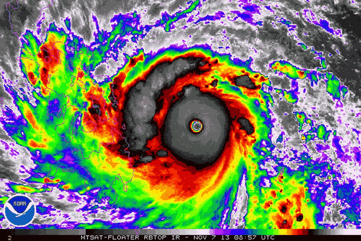
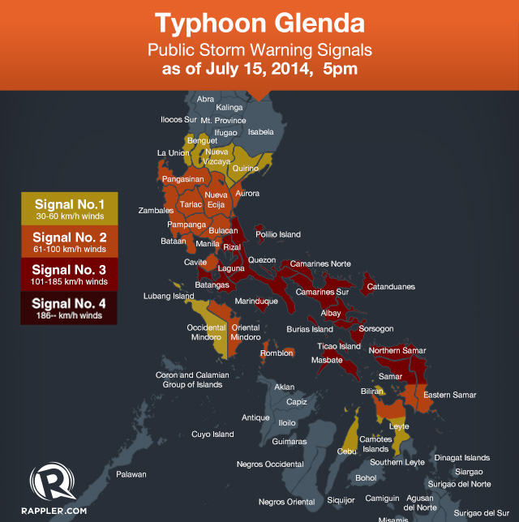

Typhoons are large storm systems characterized by circular or spiral systems of violent winds, typically hundreds of kilometers or miles in diameter. They form over warm ocean waters and are fueled by the evaporation of water vapor, which rises and condenses into clouds. The winds in a typhoon spiral in a counter-clockwise direction in the northern hemisphere and clockwise in the southern hemisphere due to the Coriolis force. Typhoons are measured on the Saffir-Simpson scale, with Category 1 being the lowest and Category 5 being the most powerful.
 One example of a typhoon is Typhoon Rammasun, also known as Typhoon Glenda in the Philippines. It strucked the Philippines in July 2014 as a Category 3 storm, affecting regions across the country with torrential rain and strong winds.
It made landfall in Rapu-Rapu, Albay, leading to widespread destruction, power outages, and evacuation efforts to safeguard residents from flash floods and landslides.
The impacts of typhoons are severe and far-reaching, causing significant damage to infrastructure, displacing populations, and resulting in loss of life. The Philippines, for example, is one of the most typhoon-impacted countries globally, with about 20 tropical cyclones traversing the country's area of responsibility each year.
To mitigate the impacts of typhoons, it is very crucial to prepare, not only for your family but the whole communiy, for the disaster beforehand. Below are some of the things that you can do to mitigate the impacts of typhoons.
| Emergency Preparedness: Having plans that need to be put in place before a typhoon occurs. It could be having emergency kits that contain food, water, and other medications, knowing the right evacuation channel, and ensuring the homes are strong enough to survive the strong winds and floods. |
| Public Awareness Campaigns: These campaigns should aim to educate communities about the hazards they face, the necessary preparations before an event, and the appropriate actions during and after a typhoon. |
| Flood Management: Measures include keeping homes out of floodplains, building earthquake-resistant structures, and enforcing building regulations to protect against typhoons. |
| Early Warning Systems: Typhoon danger is reduced with the use of early warning systems, which also help us be ready for emergencies sooner. Timely communication and evacuation plans are very crucial. |
| Engage in Community-based initiatives that promote preparedness.: We can engage in community-based initiatives that promote preparedness, such as building emergency kits, making family emergency plans, and securing our homes and surroundings. |
These strategies collectively aim to reduce the impact of typhoons and enhance overall resilience to extreme weather events.
Typhoons are powerful tropical cyclones that can bring significant damage and disruption to communities. It is essential to be prepared and take necessary precautions to ensure safety before, during, and after a typhoon.
| Before |
|---|
| > Create an Emergency Bag: Pack extra clothes, medicine, food, important documents, and house keys in a waterproof bag. > Stock up on Supplies: Ensure you have enough food, drinking water, and supplies for at least three days for everyone in the household, including pets. > Secure Your Home: Close and secure windows and doors, bring in outdoor furniture, and unplug appliances to prevent fire hazards. > Have a Safety Plan for Family and Pets: Create a communication plan with your family and have a list of emergency contact numbers and make sure pets are safe and accounted for. |
| During |
| > Stay inside and seek shelter: Stay at home or in a safe place during the typhoon. Avoid areas prone to flooding or landslides, and watch out for flying debris and objects. > Wear warm, dry clothing: Keep yourself and your family protected from the cold weather by wearing warm clothes like t-shirts, sweaters, and pants. > Monitor weather updates: Continue following the latest weather reports on TV, radio, and any advisories for your area. > Advoid floodwaters: Do not wade through flood waters to avoid risks of electrocution, leptospirosis, and other waterborne diseases. >Ensure everyone's safety: Make sure all family members, including pets, are in a safe place. Never leave burning candles or gas lamps unattended |
| After |
| > Listen to local authorities: Follow instructions from local authorities, such as evacuation orders or shelter-in-place advisories. > Inspect the home for damage: Assess the condition of your home, including the roof, walls, and foundation, to identify potential hazards. > Assess electrical systems: Check your home's electrical systems, including appliances and wiring, to ensure they are safe to use. > Maintain hygiene: Ensure access to clean water, sanitation, and hygiene facilities to prevent the spread of disease. >Contact emergency services: If you need assistance, contact emergency services, such as the National Emergency Hotline (911) or the Philippine National Police (117). |
Remember, safety should always be your top priority after a typhoon. Stay informed, follow instructions from local authorities, and take necessary precautions to ensure your well-being and the well-being of those around you.